Matbiips: Sensitivity analysis and parameter estimation in nonlinear non-Gaussian hidden Markov model
In this tutorial, we consider applying sequential Monte Carlo methods for sensitivity analysis and parameter estimation in a nonlinear non-Gaussian hidden Markov model.
Contents
Statistical model
The statistical model is defined as follows.
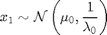
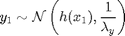
For 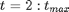
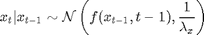
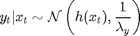
with 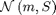 stands for the Gaussian distribution of mean 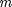 and covariance matrix 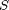, 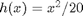, 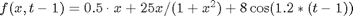, 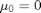, 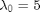,  . The precision of the observation noise
. The precision of the observation noise  is also assumed to be unknown. We will assume a uniform prior for 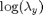:
is also assumed to be unknown. We will assume a uniform prior for 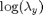:
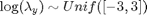
Statistical model in BUGS language
One needs to describe the model in BUGS language. We create the file 'hmm_1d_nonlin_param.bug':
var x_true[t_max], x[t_max], y[t_max]
data
{
prec_y_true <- exp(log_prec_y_true)
x_true[1] ~ dnorm(mean_x_init, prec_x_init)
y[1] ~ dnorm(x_true[1]^2/20, prec_y_true)
for (t in 2:t_max)
{
x_true[t] ~ dnorm(0.5*x_true[t-1]+25*x_true[t-1]/(1+x_true[t-1]^2)+8*cos(1.2*(t-1)), prec_x)
y[t] ~ dnorm(x_true[t]^2/20, prec_y_true)
}
} model
{
log_prec_y ~ dunif(-3, 3)
prec_y <- exp(log_prec_y)
x[1] ~ dnorm(mean_x_init, prec_x_init)
y[1] ~ dnorm(x[1]^2/20, prec_y)
for (t in 2:t_max)
{
x[t] ~ dnorm(0.5*x[t-1]+25*x[t-1]/(1+x[t-1]^2)+8*cos(1.2*(t-1)), prec_x)
y[t] ~ dnorm(x[t]^2/20, prec_y)
}
}Installation of Matbiips
Unzip the Matbiips archive in some folder and add the Matbiips folder to the Matlab path
matbiips_path = '..\..\matbiips\matlab';
addpath(matbiips_path)
Load model and data
Model parameters
t_max = 20; mean_x_init = 0; prec_x_init = 1; prec_x = 10; log_prec_y_true = log(1); % True value used to sample the data data = struct('t_max', t_max, 'prec_x_init', prec_x_init,... 'prec_x', prec_x, 'log_prec_y_true', log_prec_y_true, 'mean_x_init', mean_x_init);
Start BiiPS console
biips_init;
Compile BUGS model and sample data
model = 'hmm_1d_nonlin_param.bug'; % BUGS model filename sample_data = true; % Boolean [model_id, data] = biips_model(model, data, 'sample_data', sample_data); % Create biips model and sample data
* Parsing model in: hmm_1d_nonlin_param.bug * Compiling data graph Declaring variables Resolving undeclared variables Allocating nodes Graph size: 280 Sampling data Reading data back into data table * Compiling model graph Declaring variables Resolving undeclared variables Allocating nodes Graph size: 284
BiiPS : Sensitivity analysis with Sequential Monte Carlo
Let now use BiiPS to provide estimates of the marginal log-likelihood and log-posterior (up to a normalizing constant) given various values of the log-precision parameters .
Parameters of the algorithm.
n_part = 100; % Number of particles param_names = {'log_prec_y[1:1]'}; % Parameter for which we want to study sensitivity param_values = {-5:.2:3}; % Range of values
Run sensitivity analysis with SMC
out = biips_smc_sensitivity(model_id, param_names, param_values, n_part);
* Analyzing sensitivity with 100 particles |--------------------------------------------------| 100% |**************************************************| 41 iterations in 1.84 s
Plot log-marginal likelihood and penalized log-marginal likelihood
figure('name', 'log-marginal likelihood'); plot(param_values{1}, out.log_marg_like, '.') xlabel('Parameter log\_prec\_y') ylabel('Log-marginal likelihood') figure('name', 'penalized log-marginal likelihood'); plot(param_values{1}, out.log_marg_like_pen, '.') xlabel('Parameter log\_prec\_y') ylabel('Penalized log-marginal likelihood')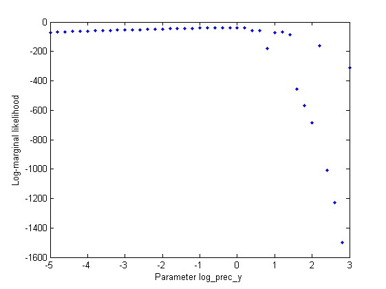 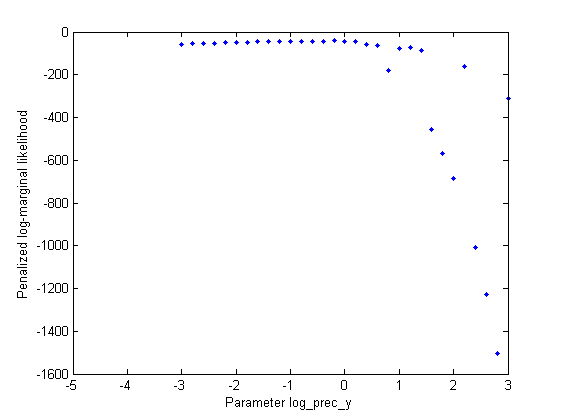
BiiPS Particle Marginal Metropolis-Hastings
We now use BiiPS to run a Particle Marginal Metropolis-Hastings in order to obtain posterior MCMC samples of the parameter and variables x.
Parameters of the PMMH param_names indicates the parameters to be sampled using a random walk Metroplis-Hastings step. For all the other variables, biips will use a sequential Monte Carlo as proposal.
n_burn = 2000; % nb of burn-in/adaptation iterations n_iter = 2000; % nb of iterations after burn-in thin = 1; % thinning of MCMC outputs n_part = 50; % nb of particles for the SMC var_name = 'log_prec_y[1:1]'; param_names = {var_name}; % name of the variables updated with MCMC (others are updated with SMC) latent_names = {'x'}; % name of the variables updated with SMC and that need to be monitored
Init PMMH
obj_pmmh = biips_pmmh_object(model_id, param_names, 'inits', {-2}); % creates a pmmh object
Run PMMH
obj_pmmh = biips_pmmh_update(obj_pmmh, n_burn, n_part); % adaptation and burn-in iterations [out_pmmh, log_post, log_marg_like, stats_pmmh] = biips_pmmh_samples(obj_pmmh, n_iter, n_part,... 'thin', 1, 'latent_names', latent_names); % Samples
* Initializing PMMH * Adapting PMMH with 50 particles |--------------------------------------------------| 100% |++++++++++++++++++++++++++++++++++++++++++++++++++| 2000 iterations in 20.31 s * Initializing PMMH - latent variables * Generating 2000 PMMH samples with 50 particles |--------------------------------------------------| 100% |**************************************************| 2000 iterations in 20.52 s
Some summary statistics
summary_pmmh = biips_summary(out_pmmh, 'probs', [.025, .975]);
Compute kernel density estimates
kde_estimates_pmmh = biips_density(out_pmmh);
Posterior mean and credibilist interval for the parameter
fprintf('Posterior mean of log_prec_y: %.1f\n',summary_pmmh.(var_name).mean); fprintf('95%% credibilist interval for log_prec_y: [%.1f,%.1f]\n',... summary_pmmh.(var_name).quant(1), summary_pmmh.(var_name).quant(2));
Posterior mean of log_prec_y: -0.5 95% credibilist interval for log_prec_y: [-1.3,0.2]
Trace of MCMC samples for the parameter
figure('name', 'PMMH: Trace samples parameter') plot(out_pmmh.(var_name)) hold on plot(0, data.log_prec_y_true, '*g'); xlabel('Iterations') ylabel('PMMH samples') title('log\_prec\_y')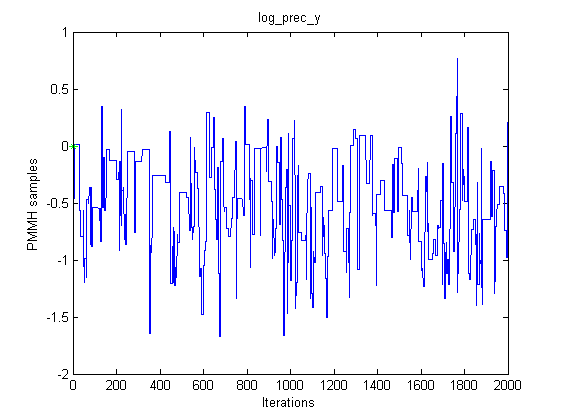
Histogram and kde estimate of the posterior for the parameter
figure('name', 'PMMH: Histogram posterior parameter') hist(out_pmmh.(var_name), 15) hold on plot(data.log_prec_y_true, 0, '*g'); xlabel('log\_prec\_y') ylabel('number of samples') title('log\_prec\_y') figure('name', 'PMMH: KDE estimate posterior parameter') plot(kde_estimates_pmmh.(var_name).x, kde_estimates_pmmh.(var_name).f); hold on plot(data.log_prec_y_true, 0, '*g'); xlabel('log\_prec\_y'); ylabel('posterior density');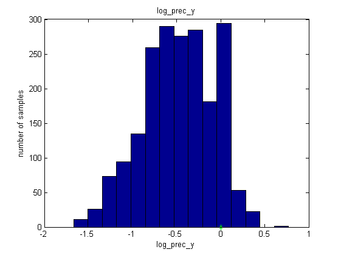 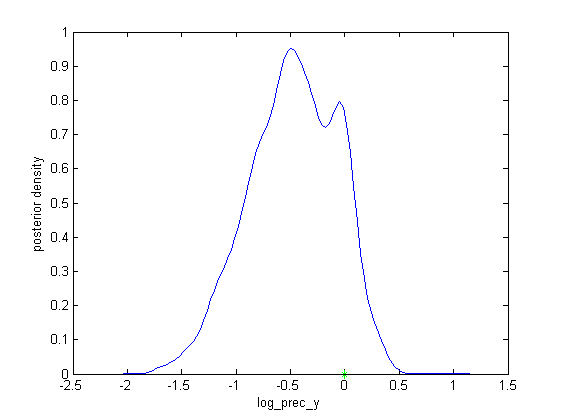
Posterior mean and quantiles for x
x_pmmh_mean = summary_pmmh.x.mean; x_pmmh_quant = summary_pmmh.x.quant; figure('name', 'PMMH: Posterior mean and quantiles') fill([1:t_max, t_max:-1:1], [x_pmmh_quant(1,:), fliplr(x_pmmh_quant(2,:))],... [.7 .7 1], 'edgecolor', 'none') hold on plot(x_pmmh_mean, 'linewidth', 3) xlabel('Time') ylabel('Estimates') legend({'95 % credible interval', 'PMMH Mean Estimate'})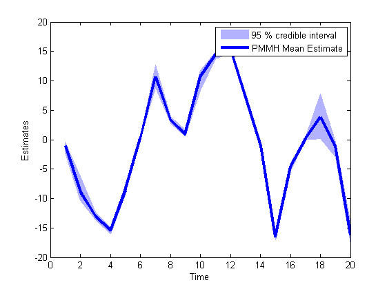
Trace of MCMC samples for x
time_index = [5, 10, 15, 20]; figure('name', 'PMMH: Trace samples x') for k=1:length(time_index) tk = time_index(k); subplot(2, 2, k) plot(out_pmmh.x(tk, :)) hold on plot(0, data.x_true(tk), '*g'); xlabel('Iterations') ylabel('PMMH samples') title(['t=', num2str(tk)]); end legend({'PMMH samples', 'True value'});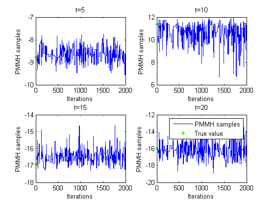
Histogram and kernel density estimate of posteriors of x
figure('name', 'PMMH: Histograms Marginal Posteriors') for k=1:length(time_index) tk = time_index(k); subplot(2, 2, k) hist(out_pmmh.x(tk, :), 15); hold on plot(data.x_true(tk), 0, '*g'); xlabel(['x_{' num2str(tk) '}']); ylabel('number of samples'); title(['t=', num2str(tk)]); end legend({'smoothing density', 'True value'}); figure('name', 'PMMH: KDE estimates Marginal posteriors') for k=1:length(time_index) tk = time_index(k); subplot(2, 2, k) plot(kde_estimates_pmmh.x(tk).x, kde_estimates_pmmh.x(tk).f); hold on plot(data.x_true(tk), 0, '*g'); xlabel(['x_{' num2str(tk) '}']); ylabel('posterior density'); title(['t=', num2str(tk)]); end legend({'posterior density', 'True value'}, 'fontsize', 12);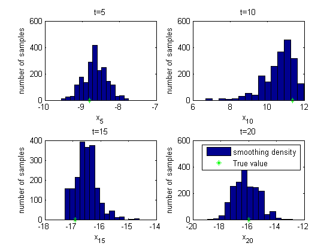 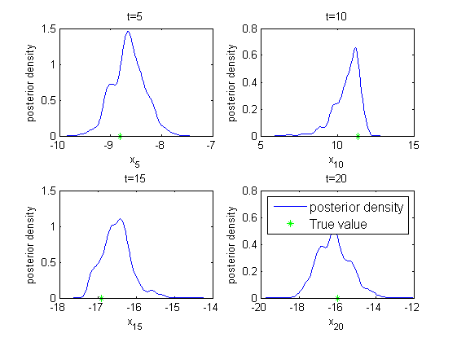
Clear model
biips_clear(model_id)